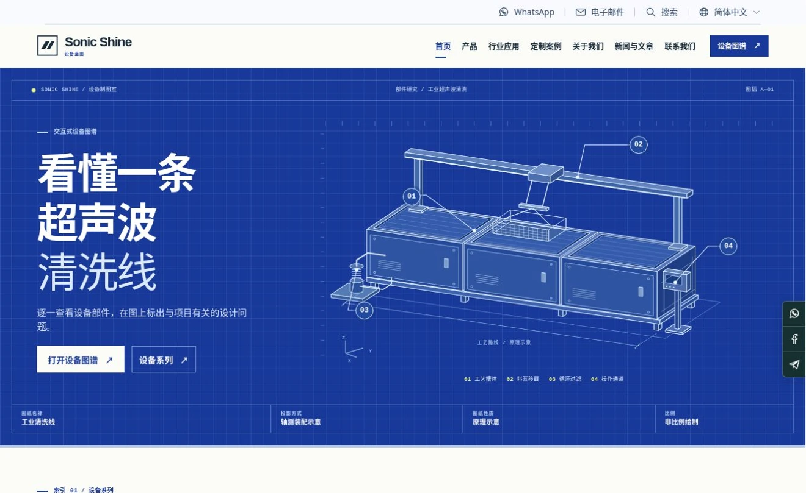
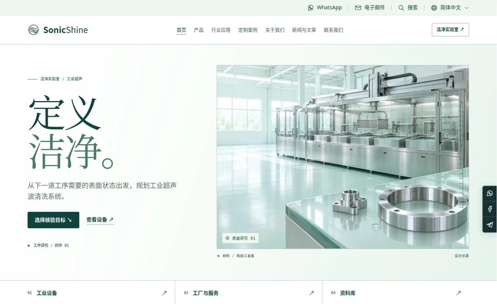
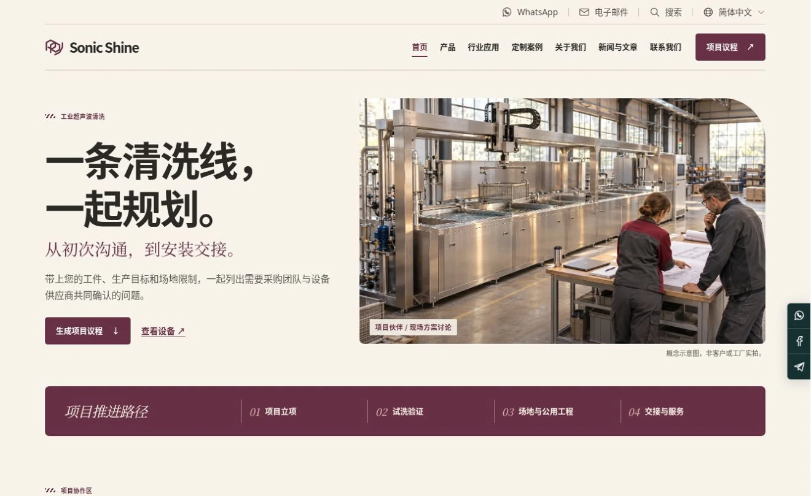
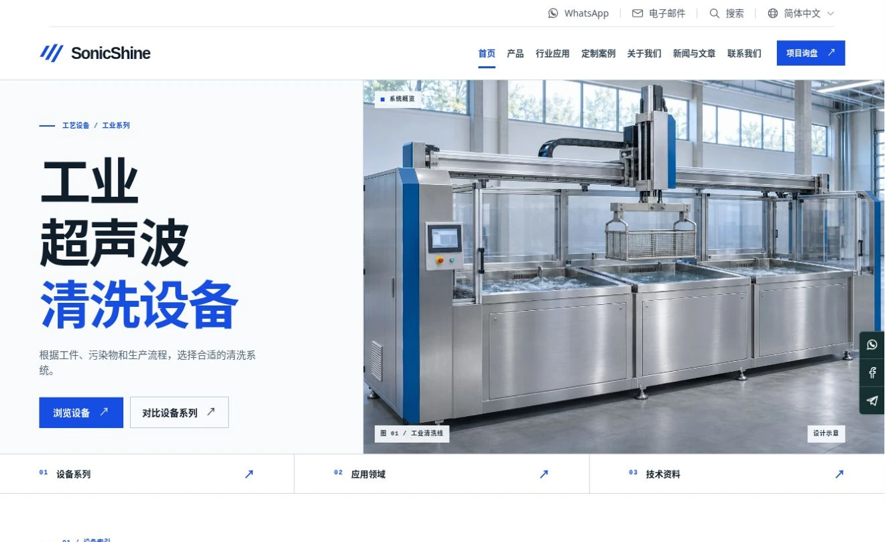
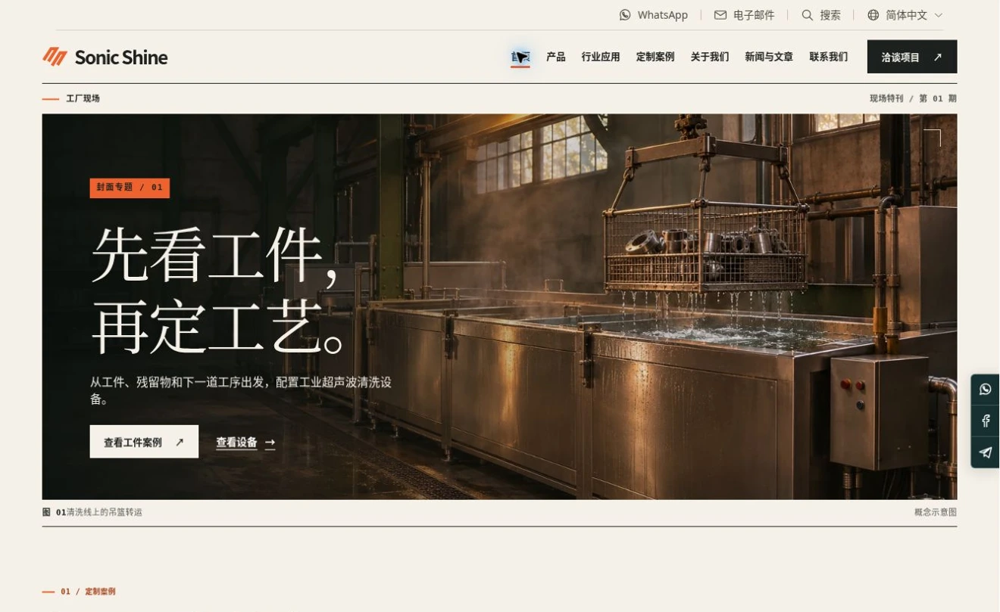
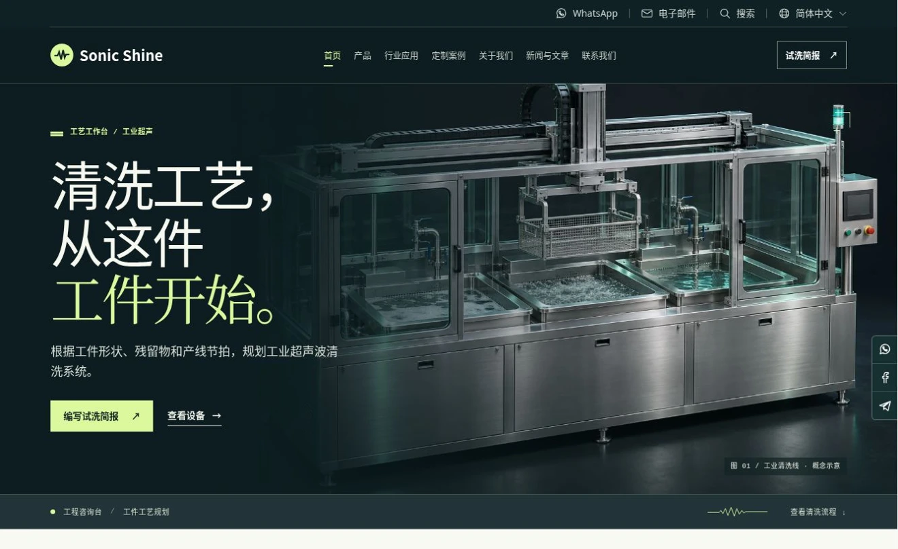

CONCEPT 04Surface LabNEW
E / 洁净实验室
从工件需要达到的洁净状态开始，选择检查目标，整理试洗前后的记录与验收条件。
定目标 → 列检查项 → 讨论验证
进入 E 版中文官网↗六套工业设备询盘官网，首页均采用三张自动轮播，并提供完整的英文与简体中文版。选择方案后，仍可在任一页面右上角切换到对应语言。

CONCEPT 04
CONCEPT 05
CONCEPT 06
CONCEPT 01
CONCEPT 02
CONCEPT 03假设一批金属工件带有切削油、内部盲孔。分别体验选设备、找案例、写试洗简报、看设备部件、定验收条件、准备项目议程六种路径。
六版都包含工业设备、应用、案例、资源和询盘。选两个版本，比较信息如何组织，以及能为下一次技术沟通准备什么。
只展示工业设备，七项主导航保留。售前售后放在「关于我们」，资源从产品、新闻或页脚进入。官网以项目询盘为主。
设备和工厂图片为概念示意，案例明确标注为设计样例。正式上线前应投入经授权的实拍、型号、工艺数据与案例。
中英两版均可填写、校验、编辑和导出本地询盘草稿。正式发布时再接入后台、运营邮箱及品牌的官方联系账号。
全部六套均已提供英文和简体中文。语言按钮会打开当前页面的另一种语言，站内搜索、互动工具与三份工程资料跟随所选语言。
本阶段为私有方案评审。正式短域名、品牌主体和发布责任待确认，原有官网保持不变。
优先补齐主推设备、重点行业和有验收依据的工件案例，让搜索与社媒访客能继续发起技术讨论。